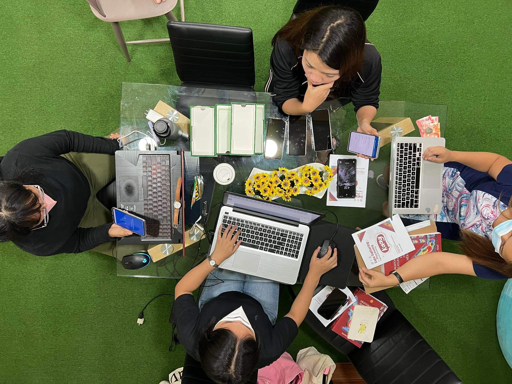

Vision
A digital age where every language, no matter how endangered, thrives.



Mission
Our mission is dedicated to advancing Sustainable Development Goals 3 (Good Health and Well-being), 4 (Quality Education), 10 (Reduced Inequalities), and 17 (Partnerships for the Goals) through innovative solutions in Natural Language Processing (NLP).
Innovative NLP Solutions
Develop Natural Language Processing tools and technologies that support language revitalization and cultural heritage.The Natural Language Processing (NLP) tools is deemed to enhance health communication through multilingual translation and dialogue systems (SDG 3), improving access to quality education for diverse linguistic communities (SDG 4), bridging the digital divide for marginalized groups to preserve and promote their languages (SDG 10), and fostering international cooperation in cultural and linguistic preservation through collaboration with global partners (SDG 17).
Language Preservation
Document, digitize, and preserve endangered languages, ensuring their survival and accessibility for future generations.Preserving and documenting endangered languages plays a crucial role in
achieving several Sustainable Development Goals (SDGs). It not only helps
maintain the cultural identity and mental well-being of indigenous
communities (SDG 3), but also creates a rich repository of linguistic
knowledge that supports lifelong learning and cultural education for future
generations (SDG 4).
Ensuring the survival and accessibility of endangered languages reduces
cultural inequalities by preserving the heritage of marginalized communities
(SDG 10). Partnering with local and international organizations in language
preservation efforts fosters global collaboration and strengthens shared
commitments to cultural diversity (SDG 17).
Community Empowerment
Empower local communities by providing the resources and training needed to actively participate in the preservation and revitalization of their native languages.Empowering local communities with resources and training for language
preservation enhances their social well-being and mental health by fostering
a strong sense of identity and pride (SDG 3). This empowerment enables
communities to actively engage in the preservation and revitalization of
their native languages, contributing to educational enrichment (SDG 4).
By equipping them with the necessary tools and knowledge, we seek to
help reduce inequalities and enable the preservation of their cultural
heritage (SDG 10). Collaborating with community organizations and
stakeholders in empowerment initiatives fosters partnerships that support
collective progress in language revitalization (SDG 17).
Research Excellence
Foster a research environment in Mindanao, encouraging and training new NLP researchers, and advancing the field of language technology.Promoting research excellence in Natural Language Processing (NLP) can lead
to innovative health communication tools that improve health literacy and
access to health information (SDG 3). Additionally, encouraging and training
new NLP researchers in Mindanao advances the field of language technology,
contributing to higher educational standards and innovation (SDG 4).
By developing a vibrant research environment, we ensure that all
regions, including underserved areas, can contribute to and benefit from
advancements in language technology, thereby reducing inequalities (SDG 10).
Fostering collaboration and knowledge exchange among researchers and
institutions enhances global partnerships, supporting collective progress in
language technology and preservation (SDG 17).
Policy and Advocacy
Influence language preservation policies and create a comprehensive technology roadmap that guides the future of NLP studies and language revitalization efforts.Influencing language preservation policies is essential for ensuring that
health information is accessible in native languages, which improves health
outcomes for indigenous and marginalized communities (SDG 3).Advocating for
supportive language policies guarantees that educational materials are
available in native languages, thereby enhancing the quality and inclusivity
of education (SDG 4).
By shaping policies that support language
preservation, we promote linguistic diversity and reduce cultural
inequalities, protecting the rights of marginalized language communities
(SDG 10). Creating a comprehensive technology roadmap and advocating for
supportive policies fosters collaboration among stakeholders, ensuring a
united and strategic approach to Natural Language Processing studies and
language revitalization efforts (SDG 17).